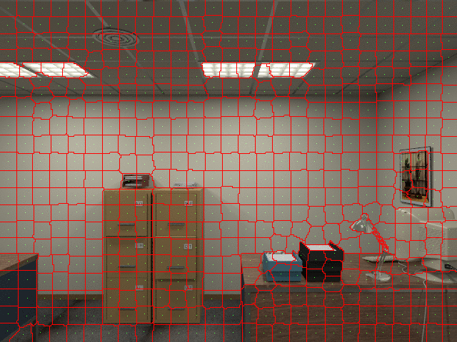
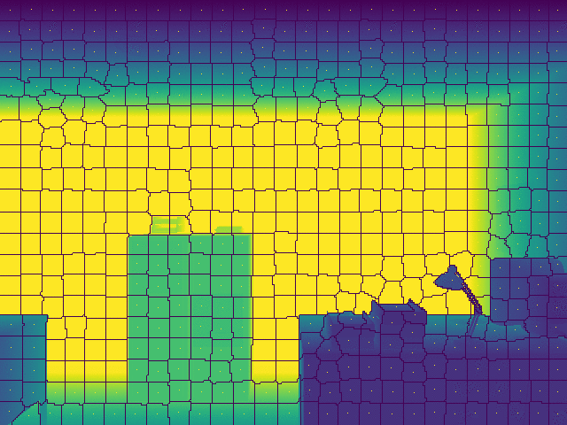

Mandy Xie, Shicong Ma, Gerry Chen
October 31, 2019


One of the fundamental tasks for robot autonomous navigation is to perceive and digitalize the surrounding 3D environment [@handa2014benchmark]. To be usable in mobile robot applications, the mapping system needs to fast and densely recover the environment in order to provide sufficient information for navigation.
Unlike other 3d reconstruction methods that reconstructs the environment as a 3D point cloud, we hope to extract surfels based on extracted superpixels from intensity and depth images and construct a surfel cloud. This approach is introduced by [@Wang19icra_surfelDense] which can greatly reduces the memory burden of mapping system when applied to large-scale missions. More importantly, outliers and noise from low-quality depth maps can be reduced based on extracted superpixels.
The goal of our project is to reproduce results of Wang et al’s, namely implementing superpixel extraction, surfel initialization, and surfel fusion to generate a surfel-based reconstruction given a camera poses from a sparse SLAM implementation. The input to our system is an RGB-D video stream with accompanying camera poses and the output is a surfel cloud map of the environment, similar to Figures 4b or 8 of the original paper [@Wang19icra_surfelDense].
The idea behind dense mapping is to first generate frame related poses, then reconstruct the dense map based on pre-generated poses and surfels.
Select a RGB-D dataset [@handa2014benchmark,sturm12iros_TUM,Menze2015CVPR_KITTI]
Read pose information from the dataset / Use a sparse SLAM system (VINS [@qin2018vins]/ORB-SLAM2 [@mur2017orb]) to estimate camera poses
(Suggested implementation) – Single frame Superpixels extraction from RGB-D images using a k-means approach adapted from SLIC [@achanta2012slic] - IV.D section in [@Wang19icra_surfelDense]
(Suggested implementation) – Single frame surfel generation based on extracted superpixels. - IV.E section in [@Wang19icra_surfelDense]
(Suggested implementation) – Surfel fusion and Surfel Cloud update. - IV.G section in [@Wang19icra_surfelDense]
We have started with the kt3 sequence of the ICL-NIUM dataset [@handa2014benchmark]. Images and depth maps have been extracted and examples shown below.


We have completed single-frame superpixel generation. The results are shown below.
 
We follow the standard implementation as described in the paper: 1. Initialize superpixel seeds - Superpixel seeds are initialized on a grid of predefined size 2. Update superpixels 1. Pixels are assigned to their nearest superpixel 2. Superpixel properties (x, y, size, intensity, depth) are updated accordingly.